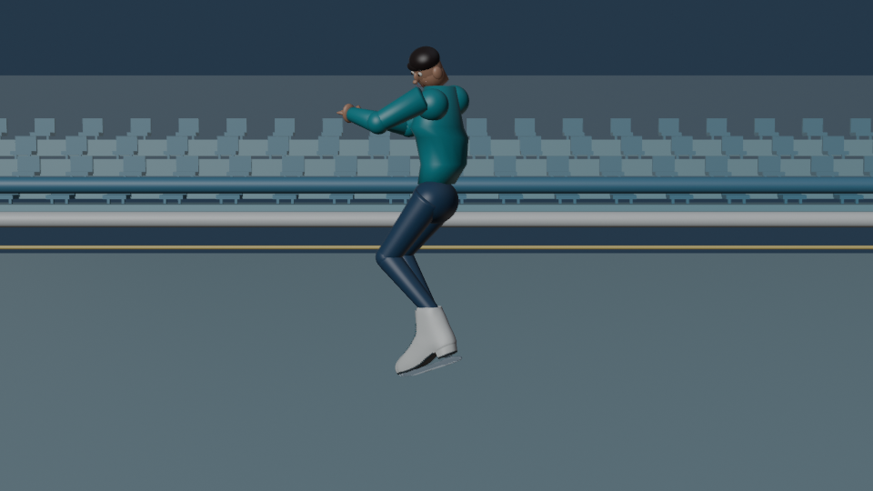
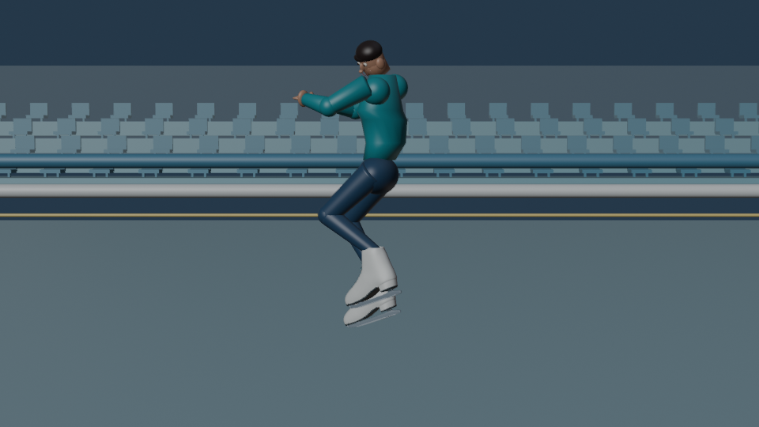

2A · 双周阿克塞尔
同一默认侧视，第 185 帧。优化后，两只靴子在最高点附近更容易分辨。


左脚向前外刃起跳，空中转 2.5 周，右脚向后外刃落冰。两版都可在播放器中将时间轴移到第 185 帧比较。模型与轨迹为 illustrative / simulated。
同一默认侧视，第 185 帧。优化后，两只靴子在最高点附近更容易分辨。


左脚向前外刃起跳，空中转 2.5 周，右脚向后外刃落冰。两版都可在播放器中将时间轴移到第 185 帧比较。模型与轨迹为 illustrative / simulated。